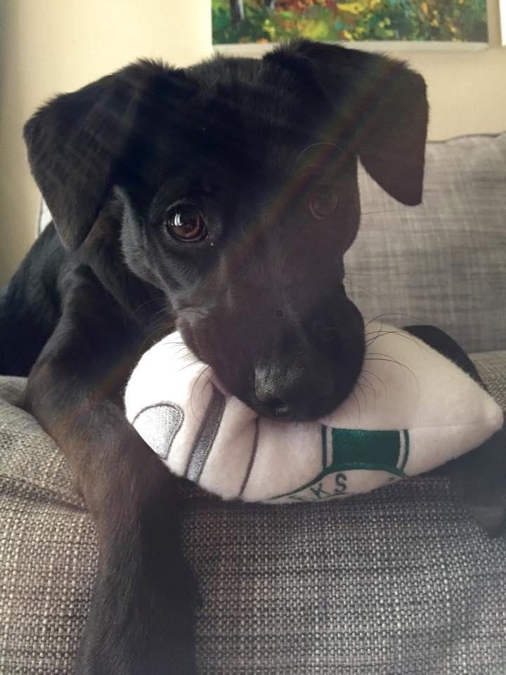

I was born and raised just outside of Seattle, WA but moved to Austin in May 2014. In my spare time, I enjoy spending time with my dog, Sammi, who I adopted from Austin Pets Alive! last year. I’m a very laid-back person who enjoys spending time with my friends and family. Some activities I enjoy are: hiking, waterskiing, paddle boarding, going for a jog around Town Lake, and traveling.
I am currently attending General Assembly’s Web Development Immersive program where I've been learning various languages, frameworks, and tools to build individual and group projects as a full-stack developer.
Problem solving is something I enjoy and web development is like one big puzzle just waiting to be put together. I LOVE that. The feeling of creating something from nothing is very fulfilling.
Although I am new to the industry, I'm excited about my newfound passion and find myself researching new skills and tools on my own time outside of class in addition to listening to podcasts to learn from fellow developers.
I am all in and can’t wait to see where my new journey as a developer takes me!
*Currently under construction. Feel free to check it out in the meantime, but keep in mind I'm making changes with the database as well as making the app responsive. Thanks for your patience!
Built an app where a user can login, rate music & sporting venues, and save them to their favorites if they wish.
Technologies used:
node.js, AJAX & http calls, JavaScript, jQuery, HTML/CSS, user authentication with Passport, MongoDB/Mongoose/MongoLab, SeatGeek API, created my own API
See it in action: venueRater
Created a question and answer forum where General Assembly students can login and get help from fellow classmates and/or other GA classes/alumni. Users can ask questions and/or answer other students’ questions.
Technologies used:
Ruby on Rails, Active Record, HTML/CSS, Postgres, user authentication with Devise, the Disqus API, Bootstrap
See it in action: SlackOverflowed
Your classic game of tic tac toe!
Technologies used:
HTML/CSS, JavaScript, jQuery, Bootstrap
See it in action: Tic Tac Toe
My path into web development is not your typical one. I attended nursing school in Helena, MT where I received my Bachelor’s of Science degree, graduating with distinction. Partway through school, I realized nursing was not my passion after all. I guess the saying is true, you never know until you try! I decided to take a step back and re-evaluate myself, my personality type, interests, hobbies, etc. to help determine a better career fit. As you may have guessed, I found web development!
I’m grateful for my experiences as a nurse and I know the critical thinking skills and empathy I gained from that chapter in my life bring a fresh perspective to the tech industry.
While I was self-reflecting, I worked as an insurance agent. I didn’t want to jump into something too soon and later discover that it wasn’t for me (just like my experience with nursing). So I worked in sales and customer service while teaching myself coding on the side. I attended an “Introduction to Programming” Java course at a local community college to dip my toe in the water and did some more practice on sites like Codecademy.
Once I realized I was really enjoying the coding world, I decided that if I wanted to make the career switch into web development, I would need to go all in. I quit my job and signed up for General Assembly’s Web Development Immersive program where I would be learning in a classroom full-time from experienced web developers. Web development was going to take over my life. And I was excited!
Believe it or not, I’ve found there are many similarities between web development and nursing. To name a few:
When people ask me why I moved to Austin, they are shocked to find out that I moved “because I wanted to!” They assumed I moved for school, a job, or was following a friend down here. Many people thought I was crazy to move so far away. To be honest, I was excited about the fact that I was moving over 2,000 miles away from home and didn’t know a single person. It was going to force myself to get out of my comfort zone. I was going to need to put myself out there, make new friends, and try new things.
I like to challenge myself and although it doesn’t always feel great being out of your comfort zone, I believe you learn more and get the most out of those experiences.